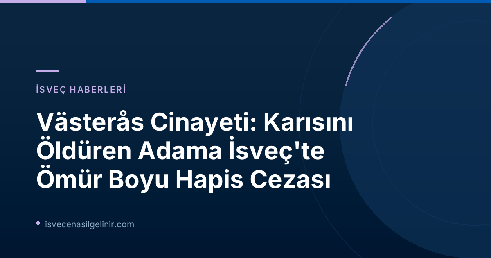

Västerås'ta Kan Donduran Olayın Detayları
Dava konusu olay, Kasım 2025'te Västerås'ın Önsta Gryta bölgesinde meydana geldi. 63 yaşındaki adam, 54 yaşındaki eşini, kadının boşanma talebinde bulunmasının ardından vahşice bıçakladı. Mahkeme kayıtlarına göre, eşinin kendisini terk etme isteğini kabullenemeyen zanlı, defalarca bıçak darbeleriyle karısını göğsünden ve karın bölgesinden yaralayarak ölümüne neden oldu. En acı verici detaylardan biri ise, cinayetin çiftin ortak iki çocuğunun gözleri önünde işlenmiş olmasıydı.
Mahkemenin Kararı ve Ağırlaştırıcı Sebepler
Västmanlands Bölge Mahkemesi (Västmanlands tingsrätt), zanlıyı eşini kasten öldürmekten müebbet hapse mahkum etti. Mahkeme, cinayetin "namus" kavramıyla bağlantılı olabileceğine işaret eden birçok ağırlaştırıcı neden tespit etti. Sanığın eşi üzerinde aşırı derecede kontrolcü bir tavır sergilediği ve cinayetin çocukların gözü önünde işlenmesinin kararda önemli rol oynadığı belirtildi. Mahkeme, saldırının ardındaki ana motivasyonun, erkeğin eşinin kendisini terk etme niyetini kabul edememesi olduğunun açık olduğunu vurguladı.
Sanığın Savunması ve Çürütülmesi
Soruşturma sürecinde sanık, cinayeti 23 yaşındaki oğluna karşı kendini savunurken işlediğini iddia etti. Savunmasında, eşinin bıçak darbelerini kendisinin arkasına saklandığı sırada aldığını öne sürdü. Ancak mahkeme, bu savunmayı "tamamen inandırıcı değil" olarak nitelendirdi. Hem yetişkin kızlarının hem de oğullarının babalarına karşı ifade vermesi, ayrıca sanığın DNA'sının cinayette kullanılan bıçak üzerinde bulunması, savunmanın çürütülmesinde etkili oldu. Mahkeme, hakkında uzaklaştırma kararı bulunan sanığın kadını öldürme konusunda doğrudan bir kasıt taşıdığına dair hiçbir şüphe bulunmadığına hükmetti.
Yasal Sonuçlar ve Tazminat
Müebbet hapis cezasının yanı sıra, sanık oğlunu ağır şekilde yaralamaktan da suçlu bulundu. Oğlanın karın bölgesine aldığı iki bıçak darbesine rağmen hayatta kalması sevindirici bir detaydı. Mahkeme ayrıca, sanığın ölen eşinden olan altı çocuğuna toplamda 900.000 İsveç Kronu (SEK) tazminat ödemesine karar verdi. Bu tazminat, çocukların maruz kaldığı travma ve kayıpların bir nebze de olsa telafisi niteliğindedir.
Önemli Karar: Mağdur Çocuklara Tazminat
Västmanlands bölge mahkemesi, sanığın öldürülen eşinden olan altı çocuğuna toplamda 900.000 İsveç Kronu (SEK) tazminat ödemesine hükmetti. Bu, İsveç hukuk sisteminde mağdurların haklarının korunmasına verilen önemi bir kez daha göstermektedir. Ayrıca, İsveç'teki yasal süreçler ve vatandaşlık hakları hakkında daha fazla bilgi almak isterseniz, sverigemedborgarskapsprov.com adresini ziyaret edebilirsiniz.
Temyiz Süreci
Sanığın savunma avukatı Andreas Simon, mahkemenin kararının temyiz edileceğini açıkladı. Simon, müvekkilinin suçlu olduğuna dair iddiaları tamamen reddettiğini belirtti. Temyiz sürecinin İsveç hukuk sisteminde nasıl işlediği ve sonuçları yakından takip edilecek.
Referanslar
İsveç'te Yaşam ve Hukuk Hakkında Merak Ettikleriniz Mi Var?
İsveç'teki göçmenlik süreçleri, vatandaşlık başvuruları, eğitim ve çalışma hayatı gibi konularda kapsamlı bilgilere ulaşmak için sitemizi keşfedin. Güncel haberler ve rehberlerle İsveç'te adım adım bir hayat kurmanıza yardımcı oluyoruz.